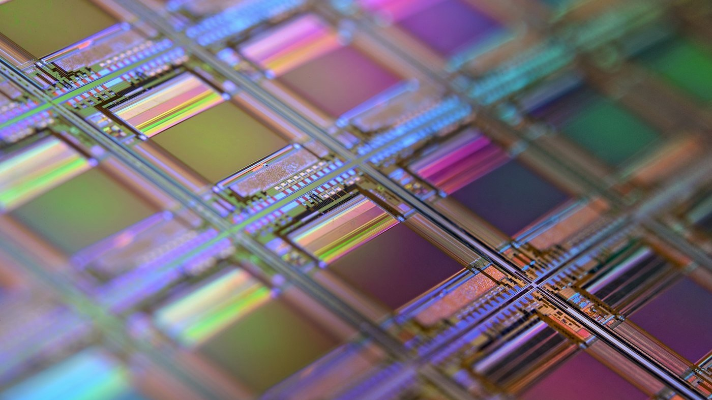
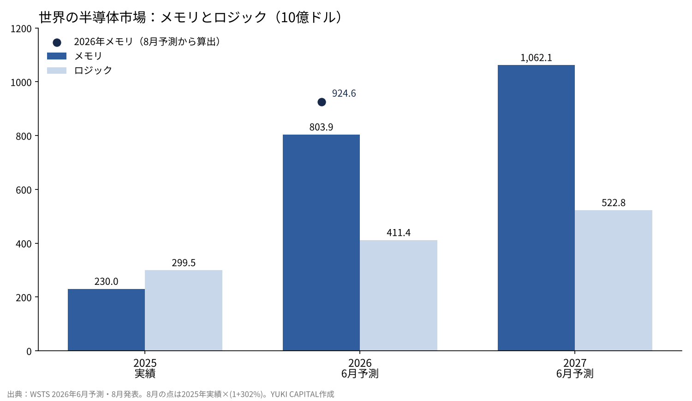
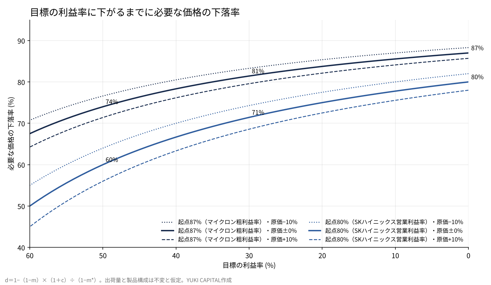

メモリの利益率は、価格が何割下がるまで耐えられるか――マイクロン・SKハイニックス・キオクシアの決算から逆算する
世界半導体市場統計（WSTS）は2026年6月、メモリの世界市場が2025年の2,300億ドルから2026年に8,039億ドルへ、3.5倍になると予測した[1]。8月の発表では、2026年の伸びをさらに302%へ引き上げている[2]。
同じ時期、米マイクロン・テクノロジーの粗利益率は87.0%、韓国SKハイニックスの営業利益率は80%に達した[3][4]。キオクシアも7〜9月期に、Non-GAAPの営業利益率で80.2%を記録した[6]。
本稿の問いは1つにする。いまのメモリの利益率は、販売価格が何割下がるまで黒字を保てるのか。決算の数字から逆算し、前提を動かして幅を出す。

問いと背景
最初に言葉を4つ定義する。DRAMは、計算中のデータを一時的に置く半導体メモリで、電源を切ると中身が消える。NANDは、電源を切っても中身が残るフラッシュメモリで、SSDやスマートフォンの記憶装置に使われる。HBM（高帯域幅メモリ）は、DRAMを縦に積み重ねてAI向けの演算装置のすぐ横に置き、データの通り道を広げた製品である。粗利益率は、売上から製造原価を引いた残りが売上に占める比率を指す。
メモリは昔から好不況の波が大きい産業とされてきた。工場の建設に数年かかる一方、製品は規格品に近く、供給が需要を上回ると価格が急に下がるからだ。
問いを価格の下落率に置いたのは、利益率の水準そのものより、どこまでの値下がりに耐えられるかのほうが、次の下り坂の深さを測る物差しになるからだ。
データと方法
使う一次資料は5つである。WSTSの2026年春季予測（6月2日）と第2四半期の発表（8月6日）[1][2]、マイクロンが米証券取引委員会に提出した2026年度第4四半期の決算発表（9月30日、四半期の締めは9月3日）[3]、SKハイニックスの2026年第3四半期の決算発表（10月27日）[4]、韓国の産業通商部と科学技術情報通信部による2026年9月のICT輸出入動向（10月14日）[5]だ。キオクシアの2026年7〜9月期の数字は報道で補う[6]。
計算は1本の式に絞る。利益率をm、製造原価をC、販売価格をPとすると、m＝1−C÷Pになる。価格がd（割合）下がり、原価がc（割合）変わったとき、新しい利益率をm*にする下落率は、d＝1−（1−m）×（1＋c）÷（1−m*）で求まる。
この式は、会社全体を1つの製品とみなし、出荷量と製品の構成が変わらないと仮定している。SKハイニックスとキオクシアは粗利益率を同じ形で並べていないため、営業利益率で代わりに計算する。営業利益率は販売費なども差し引いた後の比率なので、粗利益率で計算するより下落の余地は小さく出る。
結果：市場と3社の数字
| 項目 | 数字 | 出典 |
|---|---|---|
| メモリ世界市場 2025年（実績） | 2,300億ドル（前年比+39.0%） | WSTS[1] |
| メモリ世界市場 2026年（6月予測） | 8,039億ドル（+249.5%） | WSTS[1] |
| メモリ世界市場 2027年（6月予測） | 1兆621億ドル（+32.1%） | WSTS[1] |
| メモリ 2026年（8月予測の伸び） | +302%（2025年比で約4.0倍） | WSTS[2] |
| マイクロン 2026年度第4四半期（9月3日締め）の売上 | 542.3億ドル（前年同期113.2億ドル） | 決算[3] |
| マイクロン 粗利益率（Non-GAAP） | 87.0%（次の四半期の見通し86.25%） | 決算[3] |
| SKハイニックス 7〜9月期の売上 | 104.6兆ウォン（前年同期比+328%） | 決算[4] |
| SKハイニックス 営業利益率 | 80%（前年同期47%） | 決算[4] |
| キオクシア 7〜9月期の売上収益 | 2兆4,800億円 | 報道[6] |
| キオクシア Non-GAAP営業利益率 | 80.2% | 報道[6] |
| 韓国の半導体輸出 2026年9月 | 603.3億ドル（前年同月比+262.8%） | 韓国政府[5] |

市場全体で見ると、2026年はメモリがロジックの約2倍の大きさになる予測だ[1]。2025年はメモリがロジックより小さかったので、1年で順位が入れ替わる。
会社の数字も同じ方向を指す。マイクロンの2026年度の売上は1,331.9億ドルで、前年度の373.8億ドルの3.6倍になった[3]。SKハイニックスは7〜9月期に、四半期として初めて売上が100兆ウォンを超えた[4]。
上昇はまだ止まっていない。マイクロンは次の四半期（12月初め締め）の売上を615億ドル前後、粗利益率を86.25%前後と見込んでおり、利益率はほぼ横ばいのまま売上だけがもう一段伸びる見通しだ[3]。
国の統計でも同じ動きが出ている。韓国の2026年9月の情報通信分野の輸出は751.5億ドルで、そのうち半導体が603.3億ドルを占めた[5]。半導体だけで情報通信分野の輸出の約8割になり、前年同月の3.6倍の水準にあたる。
キオクシアの数字は、値上がりと出荷増の掛け算でほぼ説明できる。報道によると、7〜9月期の販売単価は前の四半期から20%台半ば上がり、出荷量は10%台前半増えた[6]。1.25×1.12は約1.40で、売上収益の増加額7,129億円を前の四半期の約1兆7,671億円で割った約40%とほぼ一致する。

結果：何割下がるまで黒字か
| 起点の利益率 | 利益率50%まで | 利益率30%まで | 利益率0%（損益ゼロ）まで |
|---|---|---|---|
| マイクロン 粗利益率87.0% | 74% | 81% | 87% |
| SKハイニックス 営業利益率80% | 60% | 71% | 80% |
| キオクシア 営業利益率80.2% | 60% | 72% | 80% |
原価が変わらないとすると、マイクロンは価格が87%下がるまで粗利益が残る計算になる。SKハイニックスとキオクシアも、営業利益が消えるには約80%の値下がりが要る。利益率を30%に落とすだけでも、価格はおよそ7〜8割下がる必要がある。
感度分析

| 原価の変化 | マイクロン 87%→30% | SKハイニックス 80%→30% | SKハイニックス 80%→0% |
|---|---|---|---|
| −10%（量産が進み安くなる） | 83% | 74% | 82% |
| 0%（変わらない） | 81% | 71% | 80% |
| +10%（新工場の償却などで上がる） | 80% | 69% | 78% |
| +30%（最新工程への移行で大きく上がる） | 76% | 63% | 74% |
前提を4通りに動かしても、必要な下落率は6割を下回らない。原価が3割上がる厳しい場合でも、SKハイニックスの営業利益率を30%に落とすには63%の値下がりが要る。
この式で効いているのは、利益率の高さそのものだ。起点の利益率が80%を超えると、原価は売上の2割以下になる。原価が1割動いても、売上に対して2%ほどしか動かない。
考察
反対の見方は2つある。1つ目は、供給が増えるという見方だ。マイクロンの2026年度の設備投資は273.7億ドルで、SKハイニックスも2027年に投資を大きく増やすとしている[3][4]。工場が立ち上がれば、価格は上昇の速さと同じ速さで戻りうる。
2つ目は、平均の数字が中身を隠すという見方である。HBMとサーバー向けの製品は契約で価格が決まり、スマートフォンやパソコン向けの汎用品は市場で決まる。全社の利益率が80%でも、汎用品だけを見れば下落の余地ははるかに小さいかもしれない。
一方で、需要が契約で押さえられている事実もある。SKハイニックスは主要顧客14社と、多くは5年の長期契約を結び、2027〜2028年の生産能力の半分超を契約で埋めた[4]。同社は2030年まで供給が需要に追いつかないと見ている[4]。
データの限界もはっきりしている。3社とも製品ごとの単価を開示しておらず、本稿の計算は全社の利益率から逆算した目安だ。WSTSの予測は半年で2026年の伸びを大きく書き換えており、予測そのものが動く[1][2]。
答え合わせの基準は3つ置く。マイクロンの次の四半期（12月初め締め）の粗利益率が見通しの86.25%を保つか[3]。WSTSの次の予測が2027年のメモリの伸びを32.1%から上げるか下げるか[1]。韓国の半導体輸出の前年同月比が、月ごとにどこまで鈍るか[5]。
結論
決算から逆算すると、いまのメモリ3社は、販売価格が6〜8割下がるまで利益を保てる。原価を−1割から+3割まで動かしても、この結論は変わらない。
SKハイニックスとキオクシアの営業利益率が50%を切るのも、価格が6割下がったときになる。
したがって、次の下り坂が来ても、赤字に落ちるまでには長い距離がある。問うべきは利益が残るかどうかより、価格がどの速さで戻るかであり、それを決めるのは長期契約の期限と新工場の立ち上がる時期になる。
僕はこう見ている
僕は半導体の会社を1株も持っていない。AIの会社には、設備にお金を注ぐ「投資フェーズ」と、利益を取りに行く「回収フェーズ」があると考えている。いまのメモリの数字は、投資フェーズの真ん中にいることを示している。
チップの性能が上がれば、作る側はいずれ余る側に回ると僕は見ている。11月4日にキオクシアが一時13%下げたときも、特に何も思わなかった。僕が持つのは回収フェーズで稼ぐ側のAIの会社で、この数字を見ても配分は変えない。
参考文献
- 世界半導体市場統計（WSTS）「WSTS Semiconductor Market Forecast Spring 2026」2026-06-02 https://www.wsts.org/esraCMS/extension/media/f/WST/7618/WSTS_FC-Release-2026-May.pdf
- 世界半導体市場統計（WSTS）「WSTS Q2 2026 Release」2026-08-06 https://www.wsts.org/esraCMS/extension/media/f/WST/7745/WSTS-Q2-Release-2026-08-06.pdf
- Micron Technology「Form 8-K Exhibit 99.1：Fiscal Q4 2026 results」2026-09-30 https://www.sec.gov/Archives/edgar/data/0000723125/000072312526000018/a2026q4ex991-pressrelease.htm
- SK hynix「SK hynix Announces 3Q26 Financial Results」2026-10-27 https://www.placera.se/pressmeddelanden/sk-hynix-announces-3q26-financial-results-20261028
- 産業通商部・科学技術情報通信部「2026年9月 ICT輸出入動向」2026-10-14（KDI経済情報センター掲載） https://eiec.kdi.re.kr/policy/materialView.do?num=288070
- ビジネス+IT「キオクシア 2026年7〜9月期決算」2026-10-30 https://www.sbbit.jp/article/st/187973
写真：Laura Ockel、Taylor Vick（Unsplash）。図はYUKI CAPITALが作成
日々の数字と判断は、Xで記録している。